ကြောင်ပြုစုနည်း မှာ ကြောင်လေးတွေအတွက် အရေးအကြီးဆုံးက ဘာလဲ
ကြောင်လေးတွေအတွက် အရေးအကြီးဆုံးကတော့ သက်တောင့်သက်သာ ရှိပြီး လုံခြုံစိတ်ချရတဲ့ ပတ်ဝန်းကျင်နဲ့ အချစ်များစွာပဲ ဖြစ်ပါတယ်။ ဒါပေမယ့် ကြောင်လေးတွေမှာ အခြား လိုအပ်ချက်တွေလဲ အများအပြား ရှိပါသေးတယ်။ အဲ့သည်လိုအပ်ချက်တွေကို တစ်ခုချင်း အောက်မှာ အကြမ်းဖျင်း ရှင်းပြပေးပါမယ်။သင့်တော်မှန်ကန်တဲ့ အစားအစာ
ကြောင်တွေဟာ အသားစား သတ္တဝါလေးတွေ ဖြစ်ကြပါတယ်။ ကြောင်လေးတွေအတွက် အရည်အသွေး ကောင်းမွန်ပြီး အသားဓါတ် (protein) အများအပြား ပါဝင်တဲ့ အစားအစာဟာ ကြောင်လေးတွေ ကျန်းမာရေးအတွက် အရေးကြီးသလို သွားကောင်းမွန် သန်စွမ်းရေးအတွက်လဲ အရေးပါပါတယ်။ ကြောင်တွေဟာ သဘာဝ အရ စိုစွတ်တဲ့ အစားအစာတွေကို နှစ်သက်ကြပါတယ်။ ကြောင်တွေရဲ့ အစာဟာ အရမ်းခြောက်နေရင်လဲ ကျန်းမာရေးအတွက် ရေရှည်မှာ မကောင်းနိုင်ပါဘူး။ ကြောင်တွေကို တစ်နေ့ နှစ်ကြိမ် စိုစွတ်ပြီး အသားဓါတ် များတဲ့ အစားအစာ ကျွေးပေးပါ။ ထမင်းနဲ့ ကာဘိုဟိုက်ဒရိတ်ဓါတ် များတဲ့ အစားအစာတွေဟာ ကြောင်တွေရဲ့ ကျန်းမာရေးကို ထိခိုက်နိုင်တာမို့ ရှောင်ကျဉ် သင့်ပါတယ်။ အစာကျွေးတဲ့ အချိန်ကိုလဲ ပုံမှန် အချိန်မှန် သတ်မှတ်ပြီး ကျွေးသင့်ပါတယ်။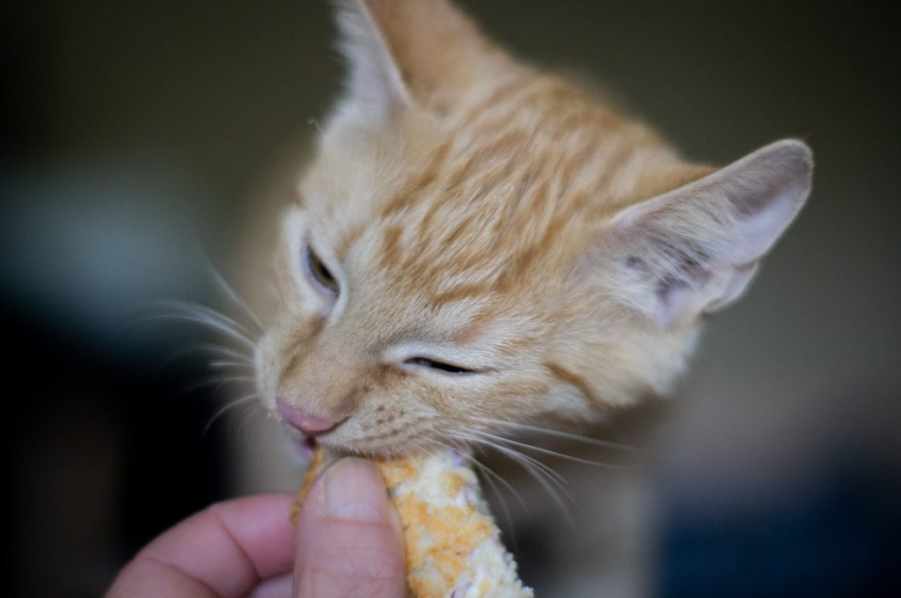
သန့်ရှင်းတဲ့ ရေ
ကြောင်တွေအတွက် သန့်ရှင်းပြီး လတ်ဆတ်တဲ့ ရေကောင်းရေသန့် ရဖို့ အရေးကြီးပါတယ်။ ကြောင်တွေအတွက် ရေခွက်ကို အနည်းဆုံး တစ်နေ့ နှစ်ကြိမ် လဲပေးသင့်ပါတယ်။ အကောင်းဆုံးကတော့ သောက်ရေသန့် တိုက်နိုင်ရင် အကောင်းဆုံးပါပဲ။ သောက်ရေသန့် မတတ်နိုင်ရင်လဲ သန့်ရှင်းတဲ့ ဘုံဘိုင်ရေ တိုက်လို့ ရပါတယ်။ ကြောင်တွေဟာ သူတို့ရဲ့ နှုတ်ခမ်းမွှေးတွေကို ကွေးတာကောက်တာ မကြိုက်ပါဘူး။ ဒါ့ကြောင့် ကြောင်တွေကို အစာကျွေးတဲ့၊ ရေတိုက်တဲ့ ခွက်တွေဟာ နှုတ်ခမ်းမွှေး လွတ်အောင် အဝကျယ်တဲ့ ခွက်ဖြစ်ဖို့ အရေးကြီးပါတယ်။ကြောင်တွေဟာ အနံခံ အလွန်ကောင်းကြပါတယ်။ သူတို့ရေခွက် နဲနဲလေး အနံထွက်လာရင် မသောက်ချင် ကြတော့ပါဘူး။ ဒါ့ကြောင့် ကြောင်သောက်တဲ့ ရေခွက်ကို နေ့စဉ် သေခြာ ဆေးကြောပေးဖို့ လိုအပ်ပါတယ်။
ကြောင်အိပ်ဖို့ နေရာ
ကြောင်တွေဟာ တစ်နေ့ကို ၁၆ နာရီခန့် အိပ်စက်ကြပါတယ်။ ကျန်တဲ့ အချိန်တွေကိုတော့ သူတို့ကိုယ် သူတို့ သန့်ရှင်းအောင် သတာ (grooming)၊ ဆော့ကစားတာ၊ အစာရှာတာ၊ အစာစားတာနဲ့ နေရာသစ်တွေကို ရှာဖွေစူးစမ်းတာတွေနဲ့ ကုန်လွန်ကြပါတယ်။ ကြောင်လေးတွေ အိမ်မှာ ပျော်အောင်ဆို သူတို့ အဆင်ပြေပြေအိမ်ဖို့ နေရာလေးတွေ ဖန်တီးပေးထားဖို့ လိုပါတယ်။ ကြောင်တွေဟာ မြင့်ပြီး မြင်ကွင်းကောင်းတဲ့ နေရာတွေမှာ အိပ်စက်ရတာ သဘောကျပါတယ်။ အပေါ်စီးကနေ ပတ်ဝန်းကျင်မှာ ဘာတွေ ဖြစ်နေသလဲ ဆိုတာ အလွယ်တကူ မြင်နိုင်လို့ပါ။ သူတို့ရဲ့ အသက်ရှင်မှု သဘာဝ (survival instinct) အရ အမြင့်မှာ အိပ်ရရင် လုံခြုံမှုကို ခံစားရလို့ပါ။ ဒါ့ကြောင့် သူတို့ ကြိုက်တတ်တဲ့ နေရာလေးတွေမှာ သန့်ရှင်းနေအောင်၊ ထိမိခိုက်မိ နိုင်တဲ့ ပစ္စည်းတွေ ရှိမနေအောင်၊ ပြုတ်ကျနိုင်တဲ့ ပစ္စည်းတွေ မရှိနေအောင် လုပ်ပေးထားဖို့ လိုပါမယ်။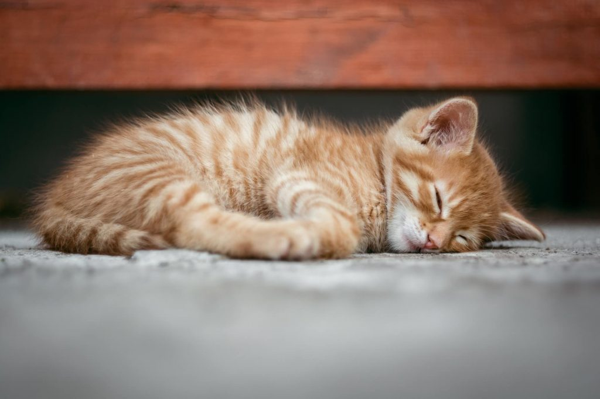
ပျော်စရာ အိမ်လေး ဖန်တီးပေးပါ
ကြောင်တွေဟာ ပုံမှန်ဆို အိမ်ပြင်ထွက်ရတာ သိပ်ပြီး မကြိုက်ကြပါဘူး။ လုံခြုံစိတ်ချရတဲ့ အိမ်တွင်းမှာ နေလိုကြပါတယ်။ အိမ်ထဲမှာ စိတ်ဝင်စားစရာ မရှိတဲ့ အခါမျိုး၊ အစာမဝတဲ့ အခါမျိုးမှာသာ အပြင်ထွက်ကြတာပါ။ သင်းကွပ်မထားတဲ့ ကြောင်တွေဆိုလဲ မိတ်လိုက်ဖို့ အိမ်ပြင်ထွက်တတ်ကြပါတယ်။ အိမ်ပြင်မှာ နေတဲ့ ကြောင်တွေရဲ့ ပျမ်းမျှ သက်တမ်းဟာ ၃ နှစ်လောက်ပဲ ခံပါတယ်။ အိမ်ထဲနေတဲ့ ကြောင်တွေကတော့ အသက် ၁၅ နှစ်လောက်အထိ အသက်ရှင်နိုင် ကြပါတယ်။ ဒါ့ကြောင့် ကိုယ့်ကြောင်လေးတွေ အိမ်မှာနေစေချင်ရင် သူတို့ပျော်တဲ့ အိမ်တွင်းပတ်ဝန်းကျင်ကို ဖန်တီးပေးဖို့ လိုပါတယ်။ကြောင်တွေကို အသက် ၆ လလောက်မှာ သင်းကွပ်ပေးဖို့ လိုပါတယ်။ သင်းကွပ်တဲ့ ကြောင်တွေဟာ အသက်ပို ရှည်ကြပါတယ်။ အပြင်လဲ ထွက်တာ နည်းသွားပါတယ်။
ကြောင်လေးတွေ အိမ်မှာ ပျော်အောင် သူတို့နဲ့ ကစားပေးတာ၊ ပွတ်သပ်ချော့မြူပေးတာမျိုးတွေ ပုံမှန် လုပ်ပေးဖို့ လိုပါတယ်။ အစာဝဝလင်လင် စားသောက်ရပြီး ချင်ခင်ခြင်း ခံရတဲ့ ကြောင်လေးတွေက အိမ်ပျော်ကြပါတယ်။
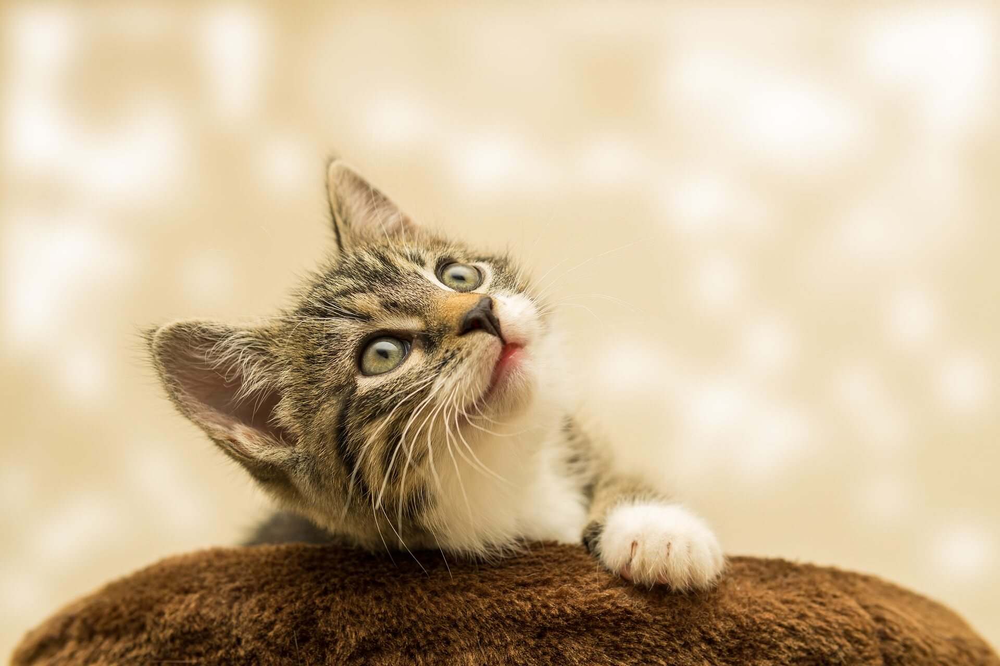
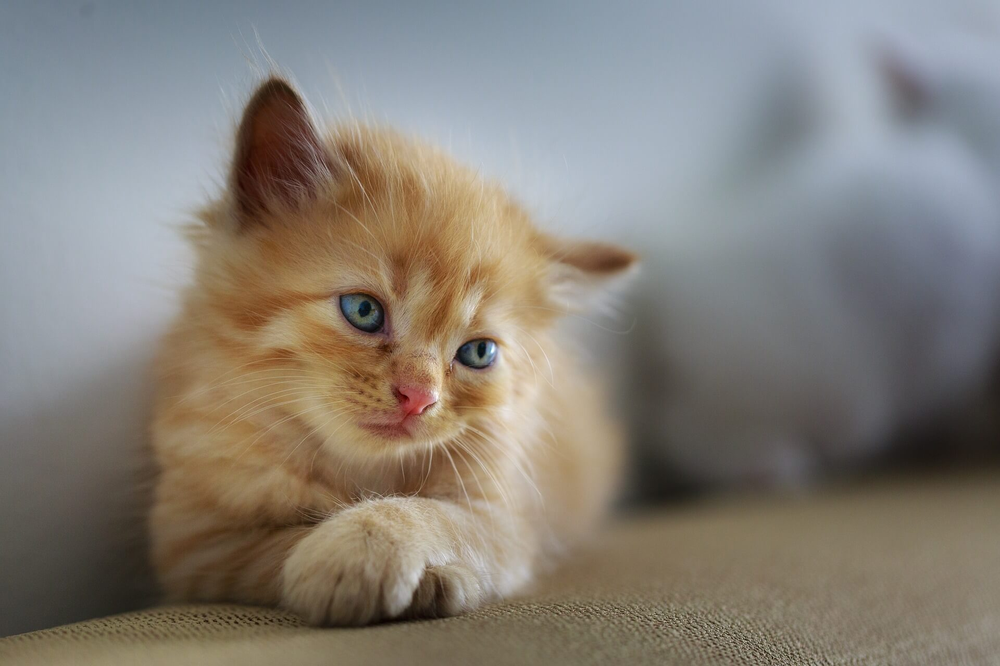
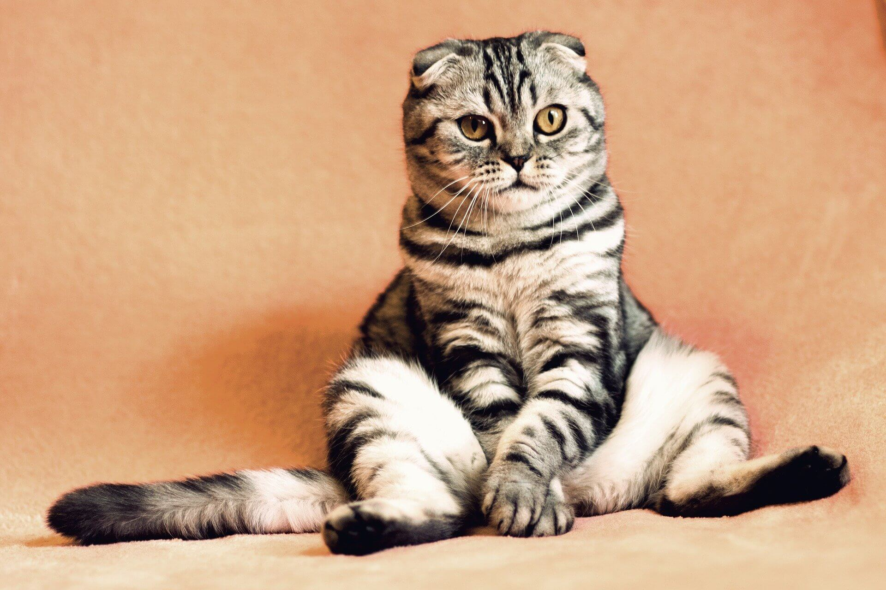
ကျန်းမာရေး ပုံမှန် စောင့်ရှောက်မှု
ကြောင်လေးတွေကို တိရိစ္ဆာန် ဆရာဝန်နဲ့ ပုံမှန် ကျန်းမာရေး စောင့်ရှောက်မှု ပြုလုပ်ဖို့ လိုအပ်ပါတယ်။ လိုအပ်တဲ့ အခြေခံ ကာကွယ်ဆေးတွေ ပြည့်မှီအောင် ထိုးပေးဖို့ လိုသလို၊ ကြောင်သန်း (ကြောင်လှေး) သတ်ဆေးလဲ ပုံမှန် ပေးဖို့ လိုပါတယ်။ (ဂုတ်ပေါ် အစက်ချတဲ့ ကြောင်လှေးသတ်ဆေးတွေ အလွယ်ရနိုင်ပါတယ်)။ကြောင်ပြုစုနည်း အတွက် လိုအပ်တဲ့ အသုံးအဆောင် ပစ္စည်းတွေ
ကြောင်တွေဟာ နဲနဲတော့ ဇီဇာကြောင်ပါတယ်။ ကြောင်မွေးတာက ခွေးမွေးတာလောက် ခွေးပြုစု ရတာလောက် ကရိကထ မများပေမယ့် သူတို့တွေမှာလဲ သူတို့ လိုအပ်ချက်နဲ့ သူတို့ ရှိပါတယ်။ အောက်က စာရင်းကတော့ ကြောင်မွေးမယ်ဆို ကြောင်ပြုစုနည်း တွေအတွက် လိုအပ်မယ့် ပစ္စည်းတွေ စာရင်း ဖြစ်ပါတယ်။ကြောင် အစာခွက်နဲ့ ရေခွက်တွေ
ကြောင်စာထည့်တဲ့ ခွက်နဲ့ ရေခွက်တွေဟာ စတီးခွက် (stainless steel) သို့မဟုတ် ကြွေခွက်တွေ ဖြစ်သင့်ပါတယ်။ ပုံမှန် ဈေးမှာ ဝယ်လို့ရတဲ့ အဝကျယ်တဲ့ စတီးခွက် ပန်းကန်လုံးဆို ရပါတယ်။ ပလတ်စတစ် ခွက်တွေကိုတော့ မသုံးသင့်ပါဘူး။ ပလတ်စတစ်ဟာ အခမသင့်ရင် အဆိပ်ဖြစ်စေတဲ့ ဓါတုပစ္စည်းတွေ ပါဝင်နိုင်ပါတယ်။ ဒါ့အပြင် ပလတ်စတစ်ရဲ့ အသားမှာ တွင်းလေးတွေ ပါတာမို့ ဘက်တီးရီးယား ပိုးတွေ ပေါက်ပွားနိုင်လို့ပါ။ အစာနဲ့ ရေခွက်တွေကိုလဲ နေ့စဉ် သေချာ ဆေးကျောပေးဖို့ လိုပါမယ်။ကြောင်ချေးပါဖို့ ဗူး
ခြံနဲ့ ဝင်းနဲ့ ကျယ်ကျယ် ဝန်းဝန်း နေသူတွေ အတွက် ပြဿနာ မဟုတ်ပေမယ့် ရန်ကုန်လို တိုက်ခန်းတွေမှာ နေသူတွေ အနေနဲ့ ကြောင်ချေးပါစရာ နေရာက အခက်အခဲ တစ်ခုဖြစ်လာပါတယ်။ ကြောင်ချေးက အနံ့ကလဲ အရမ်းနံပါတယ်။ အကယ်လို့ ငွေကြေးတတ်နိုင်မယ် ဆိုရင်တော့ ကြောင်ချေးပါ သေးပေါက်ဖို့အတွက် Cat litter sand လို့ခေါ်တဲ့ ကြောင်သန့်ရှင်းရေး ပစ္စည်းကို ဝယ်ယူအသုံးပြုသင့်ပါတယ်။ ဒီ cat litter sand က ကြောင်သေးကို စုပ်ယူပြီး မာမာ အခဲလေးတွေ ဖြစ်အောင် ဖန်တီးပေးတာမို့ အနံ့လဲ ပျောက်သွားသလို စွန့်ပစ်ရတာလဲ လွယ်ကူသွားစေပါတယ်။ နောက်ပြီး ကြောင်ချေးပါရင်လဲ ချေးထဲက ရေကို စုပ်ယူလိုက်တာမို့ ကြောင်ချေးတုံးလေးတွေဟာ ပျောစိစိ ဖြစ်မနေတော့ပဲ မာသွားလို့ စွန့်ပစ်ရတာ လွယ်သွားပါတယ်။ကြောင်တွေ ချေးပါ၊ သေးပေါက်ဖို့ ကျယ်ဝန်းပြီး ဆောက်တိမ်တဲ့ ဗူးလိုပါမယ်။ ကြောင်တစ်ကောင် ချောင်ချောင်ချိချိ ဝင်ပြီး လိုတဲ့ ကိစ္စ ဆောင်ရွက်နိုင်ဖို့ ကျယ်ကျယ် ဝန်းဝန်း ဖြစ်သင့်ပါတယ်။ အဲ့ဗူးထဲကို cat litter sand ၃ လက္မ အထူလောက် ဖြည့်ပေးပါ။ နေ့စဉ် ကြောင်ချေးနဲ့ ကြောင်သေးကို ဖယ်ရှားပေးပါ။ အထဲက cat litter sand ကိုတော့ နည်းသွားရင် ထပ်ဖြည့်ပေးဖို့ လိုပါမယ်။ Litter box ကိုတော့ တစ်လတစ်ခါလောက် ဆေးပေးဖို့ လိုပါမယ်။
အကယ်လို့ litter sand ဝယ်ဖို့ အဆင်မပြေရင်တော့ သဲကို အသုံးပြုလို့ ရပါတယ်။ ဒါပေမယ့် သဲဆိုရင်တော့ ၃ ရက် တခါလောက် လဲပေးဖို့ လိုပါလိမ့်မယ်။ နောက်ပြီး သဲက litter sand လို အနံ့ မစုပ်တဲ့ အတွက် ကြောင်သေးဆော် နံပါတယ်။
ကြောင်ကုတ်တိုင် (Cat scratching post)
ကြောင်တွေဟာ ကုတ်တာခြစ်တာ ဝါသနာ ပါပါတယ်။ ဒါက သူတို့ရဲ့ မွေးရာပါ ဗီဇပါ။ ဒါ့ကြောင့် ကြောင်မွေးရင် ကြောင်တွေ ကုတ်ဖို့ ခြစ်ဖို့ ကြောင်ခြစ်တိုင် ထားပေးဖို့ လိုပါမယ်။ နို့မဟုတ်ရင် တွေ့ကရာ လျှောက်ကုတ်တော့ ပစ္စည်းတွေ ပျက်စီးလို့ပါ။ကြောင်တွေ ကုတ်ခြစ်ခြင်းအားဖြင့် သူတို့ လက်သဲကြား ဝင်နေတဲ့ အညစ်အကျေးတွေနဲ့ သဲမှုန့် ဖုန်မှုန့်တွေကို သန့်ရှင်းပြီးသား ဖြစ်စေပါတယ်။
ကြောင်ကုတ်တိုင်ဆိုလို့ ခက်ခက်ခဲခဲ ရှာစရာ မလိုပါဘူး။ အိမ်မှာရှိတဲ့ ထမင်းစား စာပွဲ (သို့) စာရေးစာပွဲ ခြေတံကို အုံးဆန်ကြိုးနဲ့ ပါတ်ထားပေးလိုက်ရင် ကြောင်တွေ အကြိုက် ကြောင်ကုတ်တိုင် ဖြစ်သွားတာပါပဲ။
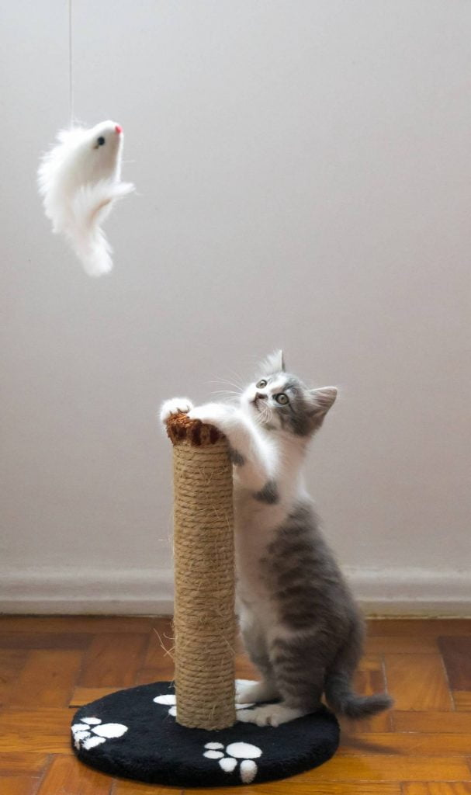
ကစားစရာ
ကြောင်တွေလဲ ကစားစရာ လိုပါတယ်။ မြေကြီးပေါ် လှိမ့်လို့ရတဲ့ ဘောလုံးလေးတွေဟာ ကြောင်တွေရဲ့ အကြိုက် ကစားစရာ ပစ္စည်းတွေပဲ ဖြစ်ပါတယ်။ ကစားစရာ တွေက ကြောင်တွေကို အပျင်းပြေ စေသလို သူတို့ရဲ့ ကာယဉာဏ ဖွံ့ဖြိုးရေးအတွက်လဲ အထောက်အကူ ဖြစ်စေပါတယ်။ အောက်ပါ ပစ္စည်းတွေကို ကြောင်လေးတွေအတွက် ကစားစရာ တွေအဖြစ် အသုံးပြုနိုင်ပါတယ်။- စက္ကူကို လုံးပြီး ဘော်လုံးလို ပစ်ကစားပါ။ လိုက်ဖမ်းရတာကို ကြောင်လေးတွေ သဘောကျကြပါတယ်။
- ပင်ပေါင်ဘောလုံးလေးတွေ
- ရေအိမ်သုံး စက္ကူလိပ်
- ခြေစွပ်ဟောင်းတွေထဲ စက္ကူစတွေ ထည့်ပြီး ထိပ်ကို ကြိုးချည်ပိတ်လိုက်ပါ။ ကြောင်လေးတွေ ပုတ်ကစားပါလိမ့်မယ်။
- အရုပ်ကလေးတွေကို ကြိုးနဲ့ချည်ပြီး တုတ်တံမှာ ချည်ထားပါ။ ကြောင်လေးတွေ လိုက်ဖမ်းအောင် ကစားလို့ ရပါတယ်။
- စက္ကူဗူးခွံတွေ၊ စက္ကူအိပ်ခွံတွေ
အထူးသတိပြုရန်
- အထူးသတိထားရမှာကတော့ လေဆာပွိုင်တာက ထွက်တဲ့ လေဆာတန်းဟာ ကြောင်လေးတွေရဲ့ မျက်စေ့ထဲ ဝင်သွားရင် အမြင်အာရုံကို ထိခိုက်စေနိုင်တာမို့ လေဆာပွိုင်တာနဲ့ ကစားခြင်း လုံးဝ မပြုလုပ် သင့်ပါဘူး။
- ကြိုးစလေးတွေ၊ ခေါင်းလောင်းလေးတွေ၊ ဖဲကြိုး၊ သားရေကွင်း၊ ချည်လုံး အစရှိတာတွေဟာ ကြောင်လေးတွေ မျိုချမိ နိုင်တာကြောင့် ပေးမဆော့သင့်ပါဘူး
ကြောင်သယ်အိတ်
ကြောင်လေးတွေကို တိရစ္ဆာန် ဆေးခန်း သွားပြရင် လုံလုံ ခြုံခြုံ ထည့်သွားနိုင်ဖို့ ကြောင်သယ်အိတ်လေး တစ်အိတ်လောက်လဲ ဆောင်ထားဖို့ လိုပါမယ်။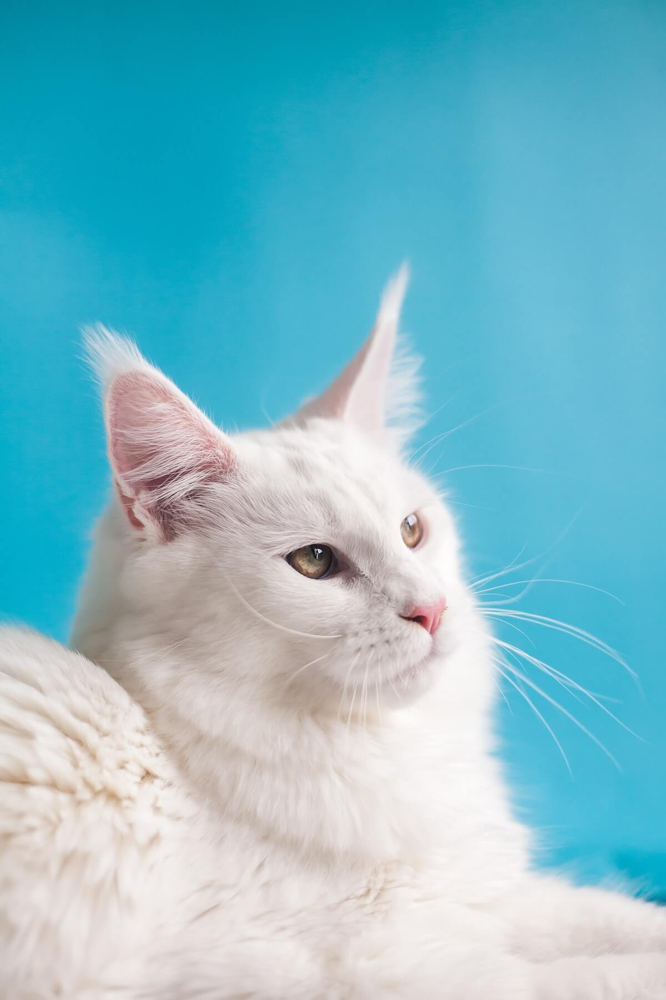
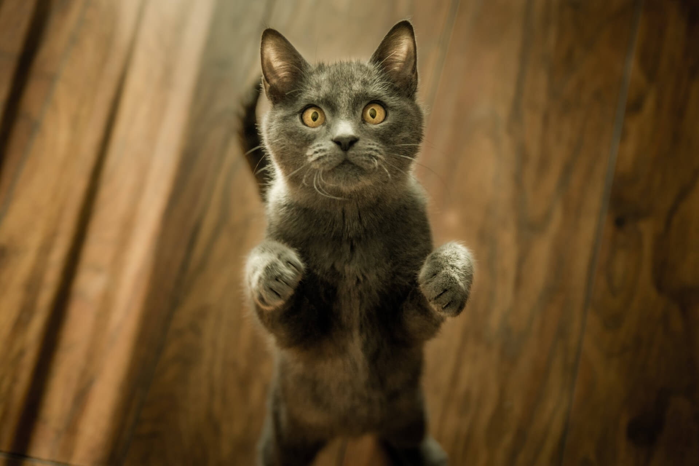
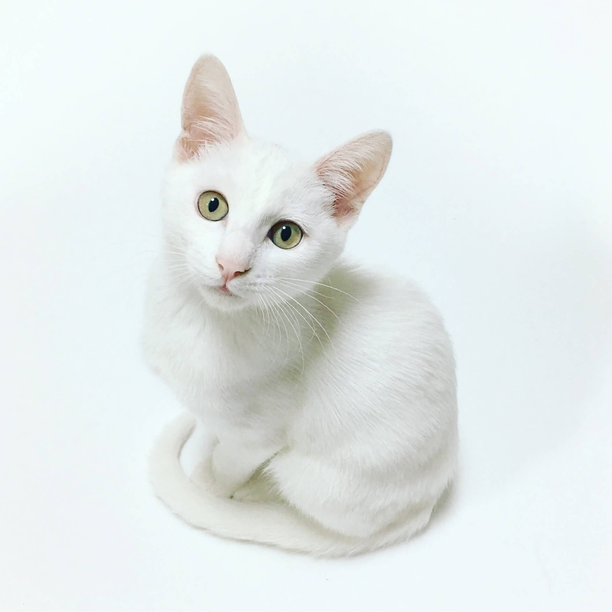
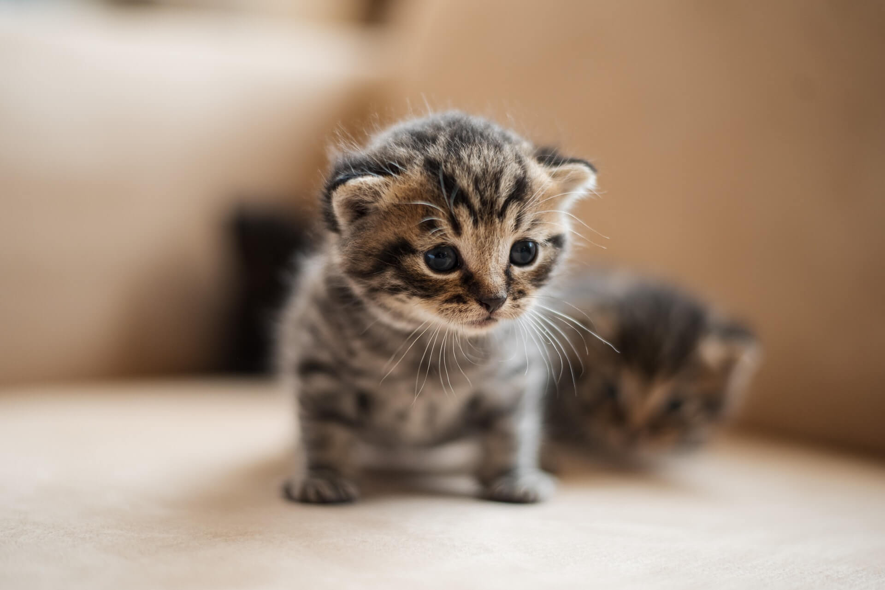
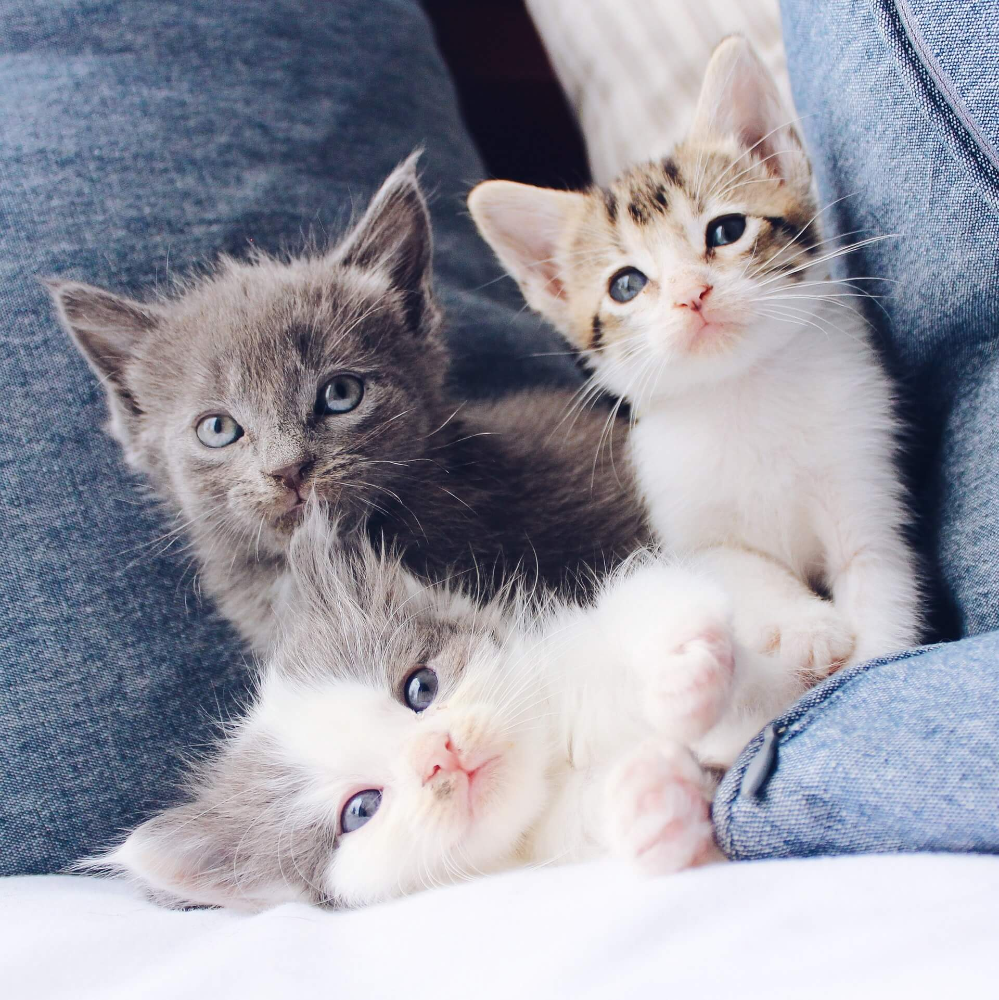